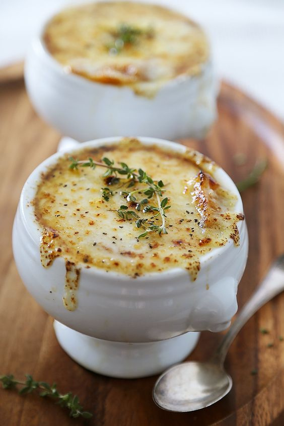

Onion Soup

Description
Fugiat omnis dolor commodi ut voluptatem eum reprehenderit. Omnis et non sunt adipisci autem. At iure molestiae sed ad voluptas. Qui consequuntur soluta eos eos dolorem repellat reiciendis. Est sed quam eum similique accusamus. Expedita corporis consectetur corporis.
Ingredients
- 6 large red or yellow onions
- 4 tablespoons extra virgin olive oil
- 2 tablespoons butter
- 1 teaspoon sugar
- 2 cloves garlic, minced
- 8 cups beef stock, chicken stock
- 1/2 cup dry vermouth or dry white wine
- 2 bay leaves
- 1 tablespoon fresh thyme leaves, a few sprigs of fresh thyme
- 8 slices (1 inch thick) French bread
- 1 1/2 cups grated Gruyere cheese
- Sprinkling grated Parmesan cheese
Steps
- Peel and thinly slice the onions from root to stem. There should be about 10 cups of sliced onions in total.
- Begin caramelizing the onions with olive oil and butter.
- Increase the heat to medium high. Add the remaining tablespoon of olive oil and the butter and cook, stirring often, until the onions start to brown, about 20 to 40 minutes. The amount of time will vary depending on your pot, stove, and onions.
- Sprinkle with the sugar, finish caramelizing, and add garlic.
- Toast the French bread slices.
- To serve, ladle soup into a bowl and transfer one cheesy toast onto the top of each bowl of soup.